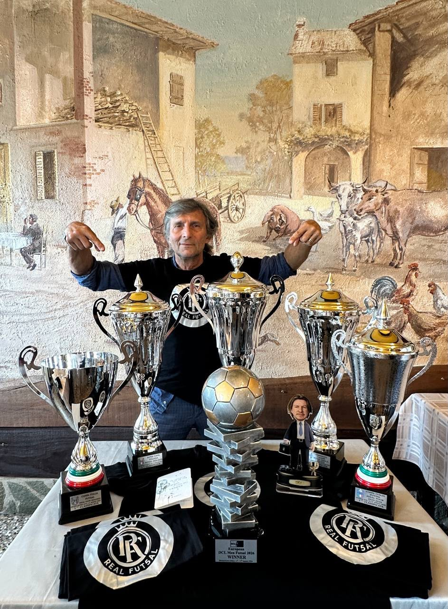
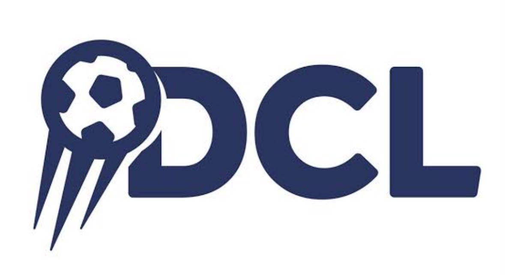
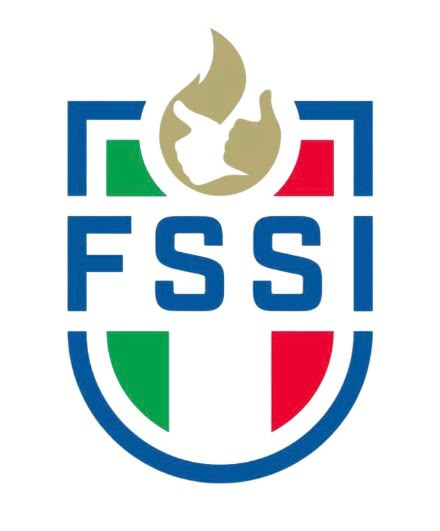

Presidente
Le preferenze restano attive su tutte le pagine.
Contatti scritti
Il gruppo che insegue il primo Scudetto FSSI e il bis in Deaf Champions League.

Il collettivo
Nel futsal dei sordi la comunicazione è sguardo, ritmo, fiducia. Real Fut5al vince così: cinque in campo che si muovono come uno. Dalla difesa al pivot, ogni reparto ha un ruolo preciso nel disegno europeo del club.
I trofei del gruppoSocietà · 2026/2027
Costituito il 6 ottobre 2026: il Presidente e i quattro Consiglieri.
Società · 2026/2027
Due punti di riferimento per la storia e i valori del Real Fut5al.
Società · 2026/2027
Settore Futsal · Area business, partnership e organizzazione.
Staff 2025/2026
Presidente nel 2025/26; Emanuele Paolella vicepresidente. Organigramma pubblicato il 3 gennaio 2026.
Allenatore nel 2025/26, affiancato dal vice Cristian Cialdi. Organigramma ufficiale.
Team manager nel 2025/26; Massimo Arena direttore sportivo. I ruoli della nuova stagione saranno confermati dal club.
Rosa 2026/2027
La rosa ufficiale è in fase di definizione. Di seguito i reparti del quintetto. I nominativi saranno annunciati sui canali del club.
Clicca un giocatore per vedere la scheda dimostrativa.
Sistema di gioco
Nel futsal contano i cinque in campo e i cambi al volo. Real Fut5al gioca un 1-2-1 aggressivo: portiere-giocatore, due laterali che spingono, un ultimo che costruisce e un pivot di riferimento.
Rotazioni continue, pressing alto e transizioni rapide: l'identità che ha portato il club sul tetto d'Europa.
Atleti e staff: Real Fut5al cresce con chi condivide l'ambizione.
ContattaciRiferimenti istituzionali
Informazioni, news e programmi sui siti ufficiali di DCL e FSSI.

Informazioni, notizie e programmi delle competizioni DCL.
Visita il sito ufficiale ↗Si apre in una nuova scheda
News federali, comunicati e calendario delle attività sportive.
Visita il sito ufficiale ↗Si apre in una nuova scheda